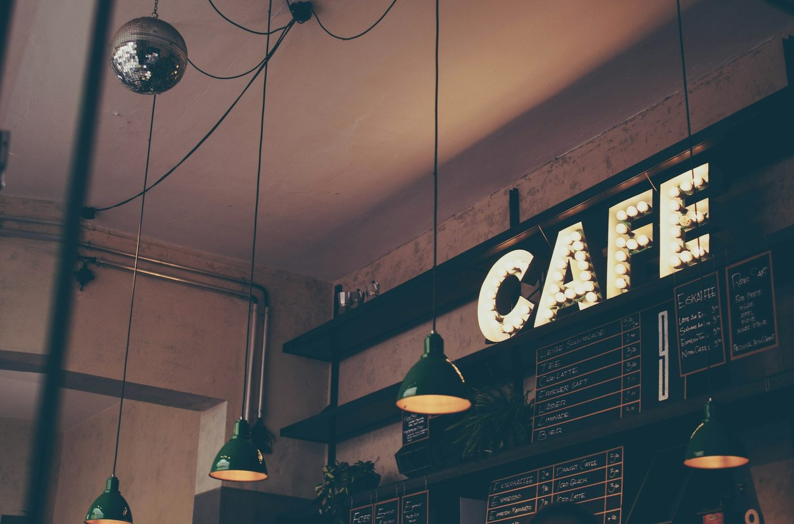
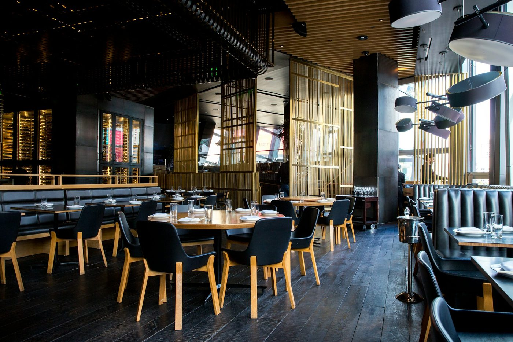
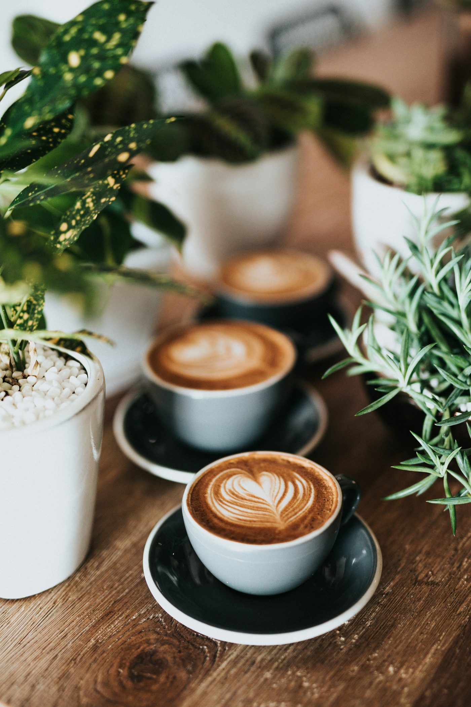

Bread,
slow coffee,
open tables.
A warm editorial concept for a neighbourhood room — written and photographed as a study, not as a real café.

The room
A table by the window.
Maison Café is a fictional room drawn for WEBAUR’s portfolio. The menu, the hours and the photographs show how a real neighbourhood café might present itself. They do not describe a place you can visit.
Hours
Wed–Fri 08–16
Sat–Sun 09–15
Mon–Tue kitchen closed
Location
A fictional café, set on a quiet street. This page does not represent a real business or a real address, and there is no map pin to follow.
A table
In a live project, a short form or a booking link would sit here. Nothing can be reserved on this concept.
Reserve a table.
The button is here so you can see how a reservation call-to-action would sit on the page. It only brings you to this note.
Concept project — no real reservation. Maison Café is a demonstration website by WEBAUR. “Reserve” does not send a request or hold a table.
